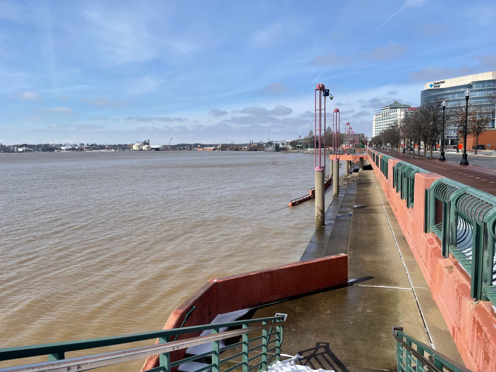
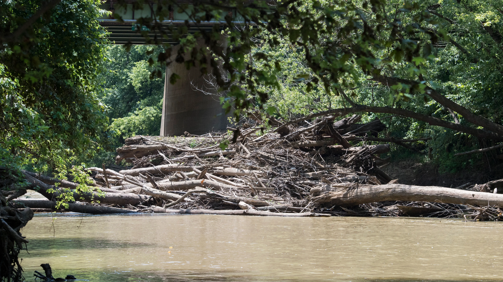
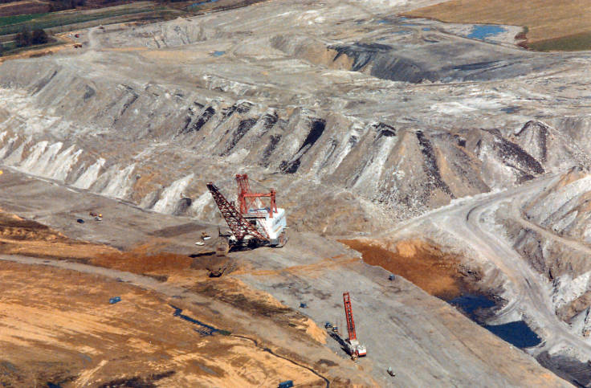

A Superfund site, or place requiring long-term cleanup, exists in Evansville because of an electroplating
company that released arsenic, lead, and other toxins in the soil and water covering a 4.5-square-mile area.
By 2023, more than 4,000 properties had been cleaned as a result (Van Vlear).
Evansville continues to face issues from coal ash, which leeches into the river from landfills upstream.
In Rockport, Indiana, a facility dumped almost 11 million pounds of nitrates into the river, which are linked
to developmental and birth defects. These pollutants also kill off marine life once they reach the Gulf of
Mexico, as the algal blooms they facilitate deplete the water of oxygen (Hampson).
Mercury is also present in the Ohio River and causes birth defects and harm to children, reducing brain
development. While a ban was passed in 2003, the ORSANCO Watershed Organizations Committee has had difficulty
forcing companies to uphold it (Cleaning Up).
PFAS, or forever chemicals, exist in every fish tested in Kentucky; they are also present in almost all humans
(Hampson).

Pigeon Creek’s watershed covers 235,000 acres, and the creek transports most of the rainwater around
Evansville. Nearly half of it is covered by farmland, a quarter by forest, 7.5% by wetlands, and the rest by
urban development.
In 2019, the Vanderburgh County SWCD started an effort to drain 107 acres in polluted areas of Vanderburgh,
Warrick, and Gibson counties (Lower Pigeon Creek). Additionally, the Evansville Nature Conservancy is using
two-stage ditches to channel fewer pollutants into Pigeon Creek. These use heightened embankments at each side
of the creek to stop direct entry of runoff, and are being implemented on public and private land (Shoulders).
Pigeon Creek faces similar problems to large bodies of water like the Ohio River; it is also affected by
long-term contamination, excess nutrients from agricultural runoff, and other factors.

Human development has destroyed eighty-five percent of Indiana’s original wetlands and almost all of its
native tallgrass prairies (Habitats). These prairies once covered almost all of North America, and their
biodiversity was only rivaled by the Amazon Rainforest (Prairies).
Prairies provide food and shelter for birds like bobwhite quail and greater prairie chickens; without at least
20 acres of grasslands, these species cannot find enough food to survive winters. Greater prairie chickens
require 640 acres of land to sustain their population, and none currently exist in Indiana (Prairies).
To combat habitat loss, landowners can repurpose parts of their land for prairie grasses. Any area with
primarily grasses and wildflowers can harbor wildlife, especially migratory birds (Prairies).
Though Indiana’s wetlands once covered around twenty-five percent of the state, most were drained for
agriculture and development.
Wetlands are important because they hold very large amounts of water, which they filter, in addition to
storing carbon. They are also home to many endangered species (Vigue).
Information from this website was adapted from an ecology blog called Eco Friendy Evansville that I made with my friend, Jasper Bouseman. Find all the sources I used on the Sources page.